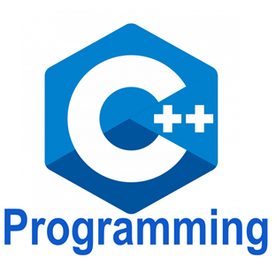
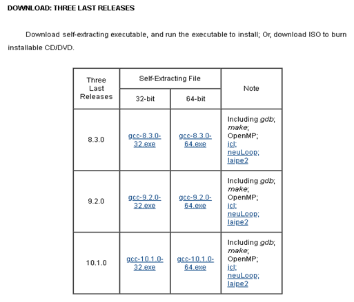
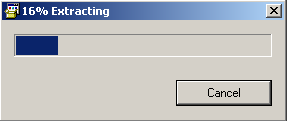
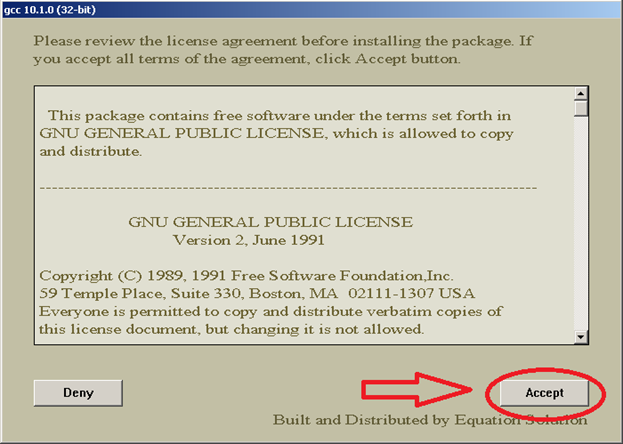
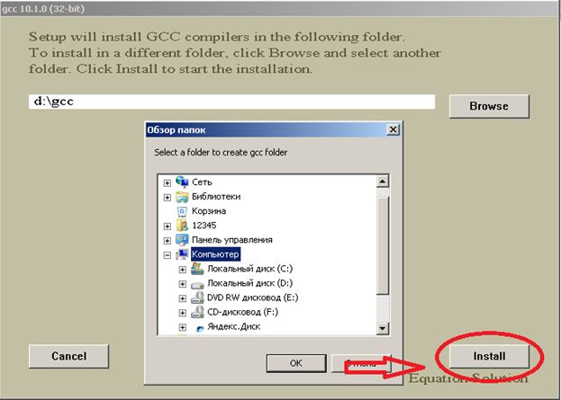
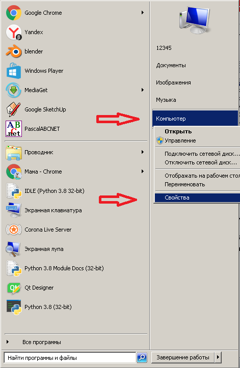
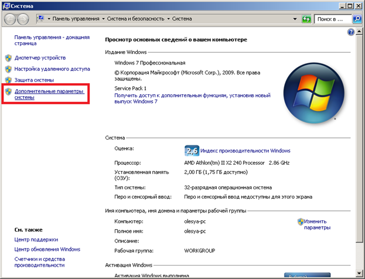
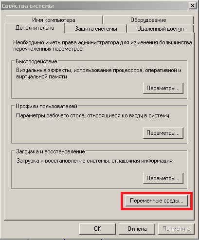
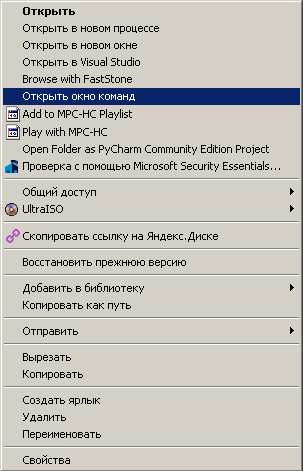
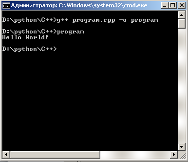

1) Скачивание и установка
Для начало скачаем компилятор. Для этого перейдём на сайт

Выбираем нужную нам разрядность и скачиваем.Прямые ссылки на скачивание: Windows 32 bitWindows 64 bit
После скачивания запускаем установщик и ждём некоторое время.
Далее жмём ”Accept” (Принимаю)Жмём Browse и выбираем путь установки и жмём “Install”После окончания установки жмём "Finish".
2) Добавление директории в переменную Path
Переходим в свойства компьютера. Для этого перейдите в меню пуск и кликнете правой клавишей на надпись “Компьютер” и выберите свойства.
Нажмите на “Дополнительные параметры системы”Затем перейдите в “Переменные среды”
Найдите переменную “Path” и нажмите “Изменить”
Поставьте знак точка с запятой вставьте путь куда установили компилятор и добавьте “/bin” без кавычек. И нажмите везде “ОК”
Пример:
Если у вас компилятор находится на “D:\gcc”, то вы должны добавить “;D:\gcc\bin” без кавычек.
3) Компиляция программы
1) Создайте новую папку
2) Создайте файл program.cpp “Необязательно program можно любое название”
3) Добавьте в файл код:
#include
6) Введите в командную строку g++ название_файла.cpp -o название_программы В нашем проимере g++ program.cpp -o program Введите program Вы получите такой результат: 